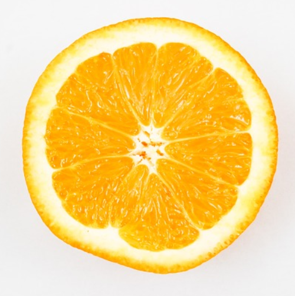
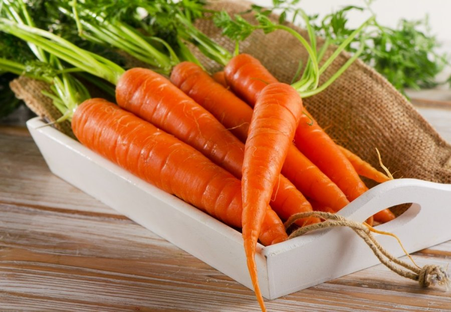

Obuolys – būdingas obelų vaisius, morfologiškai irgi vadinamas obuoliu.
Obuolyje yra 3-5 lizdai su 2-3 sėklomis lizde. Vaisiaus luobelė labai plona, minkštimas sultingas, be
sukietėjusių ląstelių. Prinokę obuoliai būna raudoni, geltoni, žalsvi ar įvairiaspalviai. Mažais obuoliais
įvardijami pagal prigimtį maži obuoliai (pvz., Rojaus obuoliai) arba pradinės nokimo stadijos, dar neprinokę
obuoliai. Tradiciškai obuolių rinkimo metu mažus obuolius patikima surinkti vaikams (iš to ir liaudiškas
pavadinimas - kriupius). Maži obuoliai dažnai renkami į pintines, gali būti lengvai veriami ir džiovinami
rinkėje, vėlgi skirtingai nuo kitų obuolių, kuriuos tenka paskleisti plačiai.
152
Apelsinas

Apelsinas sveria 100 – 150 gramų ir auga ant apelsinmedžių. Vaisiai priskiriami citrusinių vaisių kategorjai
kartu su citrinomis, greipfrutais, pomelais ir t.t. Yra daug apelsinų rūšių, tačiau jie skirstomi į 2
pagrindines grupes – saldžius ir karčius. Manoma, kad apelsinas yra hibridas, kilęs iš pomelo ir mandarino.
Apelsinmedžiai auginami tropinio ir subtropinio klimato vietovėse, o 1987 metais, tai buvo labiausiai pasaulyje
paplitęs vaismedis pasaulyje. Daugiausiai pasaulyje apelsinų užaugina Brazilija ir JAV. Šiuo metu vis dar
nežinoma iš kokio laukinio augalo kilo apelsinas, tačiau manoma, kad jų kilmės vieta yra Pietų Kinija, Šiaurės
rytų Indija ir galbūt Pietryčių Azija. Pirmiausia Apelsinai buvo pradėti auginti Kinijoje, maždaug prieš 4500
metų. Europą apelsinai pasiekė XI a., kaip buvo kryžiuočių atgabenti į Italiją.
19
Daržovės
Morka

Morka (lot. Daucus, angl. Carrot, vok. Karotte) – salierinių (Apiaceae) augalų gentis, kuriai priklauso
dvimečiai augalai su plunksniškai suskaldytais lapais ir elipsišku arba kiaušinišku vaisiumi.[1] Žolė,
paplitusi Š. Afrikoje, Š. Amerikoje, Pietvakarių Azijoje. Lietuvoje auga viena savaiminė rūšis – paprastoji
morka (Daucus carota) ir plačiai auginama valgomoji morka (Daucus carota var. sativa), kuri nuo tipinės formos
skiriasi stora, mėsinga, oranžinės ar gelsvos spalvos šaknimi.